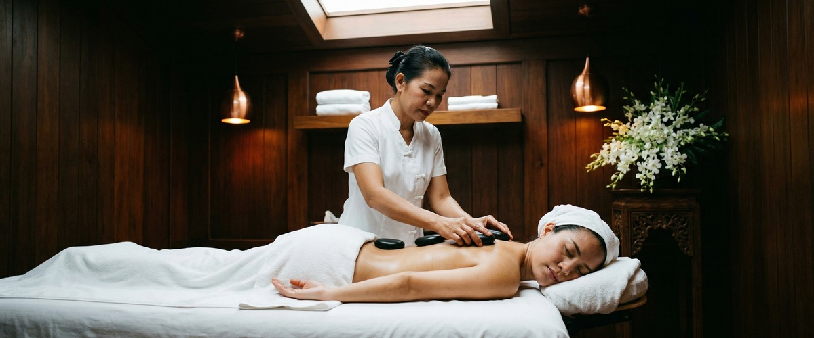
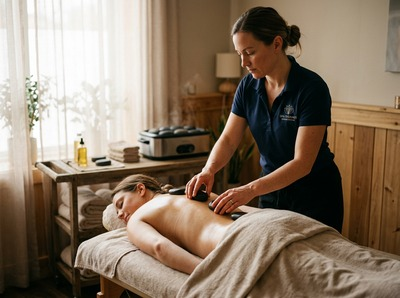

If tight muscles, persistent tension, or a body that simply won't switch off are part of your daily life, hot stone massage in Glasgow may be exactly what you need.

This treatment pairs therapeutic massage with the deep, penetrating warmth of heated basalt stones. It delivers relief that hands alone cannot match. You can book your session online and take the first step toward genuine rest.
Hot stone massage is a full-body therapy. Smooth, flat basalt stones are heated to a carefully controlled temperature and used throughout the session. The stones may be placed along the spine, on the shoulders, or held in the palms as your therapist works across the body.

Your therapist uses flowing strokes, kneading, and targeted pressure alongside the stones. The heat moves directly into the muscle tissue, allowing them to reach deeper layers without increasing pressure.
The warmth causes blood vessels to widen, improving circulation and helping the body clear built-up tension more efficiently. The result is a session that feels both deeply relaxing and genuinely therapeutic.
Hot stone massage suits anyone carrying deep or stubborn tension that regular massage hasn't fully resolved. It works well for office workers with chronic upper back and shoulder tightness, and for people managing stress-related fatigue or difficulty switching off mentally.
If you find Swedish massage relaxing but want something that works deeper without extra pressure, this treatment is a strong fit.
Sessions run between 60 and 90 minutes. You'll lie on a comfortable treatment table while your therapist places heated stones along key points of the body, then uses them to perform long, flowing strokes across the back, legs, and shoulders.
The temperature is always monitored. Let your therapist know at any point if you'd like the stones adjusted. You'll be draped throughout, and a light massage oil is applied so the stones glide smoothly across the skin.
After your session, most people feel deeply calm and pleasantly warm through their whole body. It's worth drinking water afterwards to support recovery. Take things gently for the rest of the day if you can.
At Serendipity Massage Therapy & Wellness, every hot stone massage is delivered by a trained therapist using techniques developed by head therapist Jariya Malone. Our studio on Hope Street sits in the heart of Glasgow's city centre, and every session is tailored to your needs — not a set script. Reserve your appointment and let us take care of the rest.
Most clients undress to their underwear or fully, depending on their comfort level. You are professionally draped with towels throughout the entire session, and only the area being worked on is ever uncovered. Your therapist will talk you through everything before the session begins.
Sessions typically last 60 or 90 minutes. A 60-minute session covers the main areas of tension effectively, while 90 minutes allows for fuller body work and a more deeply restorative experience. Your therapist can advise which length suits your needs when you book.
Most people feel deeply relaxed, warm through the body, and noticeably calmer after their session. Some clients experience mild fatigue as the body processes the treatment, which passes within a few hours. Drinking water afterwards helps and we'd suggest keeping the rest of the day relaxed where possible.
For general stress relief and relaxation, once or twice a month works well for most clients. If you're managing chronic tension or persistent muscle tightness, your therapist may recommend more frequent sessions initially, tapering as your body responds. Regular treatments tend to produce much better results than a single one-off session.
Hot stone massage is not recommended for people who are pregnant, have high blood pressure, varicose veins, sensitivity to heat, open wounds, or who have had surgery within the last three months. If you have any health concerns, please mention them when booking or speak with your therapist before your session. We'll always advise on whether this treatment is right for you or suggest a more suitable alternative.
Swedish massage uses flowing strokes and gentle kneading, working through manual pressure applied by the therapist's hands. Hot stone massage adds heated basalt stones, which deliver warmth deep into the muscle tissue and allow for greater relief without heavier pressure.
Many clients find hot stone massage more effective for stubborn tension. Swedish massage is a gentler starting point for those new to therapeutic work. Serendipity offers both, and your therapist can help you choose.